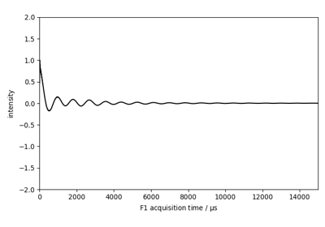

spectrochempy.read_topspin¶
-
read_topspin(*paths, **kwargs)[source]¶ Open Bruker TOPSPIN (NMR) dataset.
- Parameters
*paths (str, optional) – Paths of the Bruker directories to read.
**kwargs (dict) – See other parameters.
- Returns
read_topspin –
NDDatasetor list ofNDDataset.- Other Parameters
expno (int, optional) – experiment number.
procno (int) – processing number.
protocol ({‘scp’, ‘omnic’, ‘opus’, ‘topspin’, ‘matlab’, ‘jcamp’, ‘csv’, ‘excel’}, optional) – Protocol used for reading. If not provided, the correct protocol is inferred (whnever it is possible) from the file name extension.
directory (str, optional) – From where to read the specified
filename. If not specified, read in the defaultdatadirspecified in SpectroChemPy Preferences.merge (bool, optional) – Default value is False. If True, and several filenames have been provided as arguments, then a single dataset with merged (stacked along the first dimension) is returned (default=False).
sortbydate (bool, optional) – Sort multiple spectra by acquisition date (default=True).
description (str, optional) – A Custom description.
origin ({‘omnic’, ‘tga’}, optional) – In order to properly interpret CSV file it can be necessary to set the origin of the spectra. Up to now only ‘omnic’ and ‘tga’ have been implemented.
csv_delimiter (str, optional) – Set the column delimiter in CSV file. By default it is the one set in SpectroChemPy
Preferences.content (bytes object, optional) – Instead of passing a filename for further reading, a bytes content can be directly provided as bytes objects. The most convenient way is to use a dictionary. This feature is particularly useful for a GUI Dash application to handle drag and drop of files into a Browser. For exemples on how to use this feature, one can look in the
tests/tests_readersdirectory.listdir (bool, optional) – If True and filename is None, all files present in the provided
directoryare returned (and merged ifmergeis True. It is assumed that all the files correspond to current reading protocol (default=True)recursive (bool, optional) – Read also in subfolders. (default=False)
See also
read_topspinRead TopSpin Bruker NMR spectra.
read_omnicRead Omnic spectra.
read_opusRead OPUS spectra.
read_labspecRead Raman LABSPEC spectra.
read_spgRead Omnic *.spg grouped spectra.
read_spaRead Omnic *.Spa single spectra.
read_srsRead Omnic series.
read_csvRead CSV files.
read_zipRead Zip files.
read_matlabRead Matlab files.
Examples using spectrochempy.read_topspin¶
